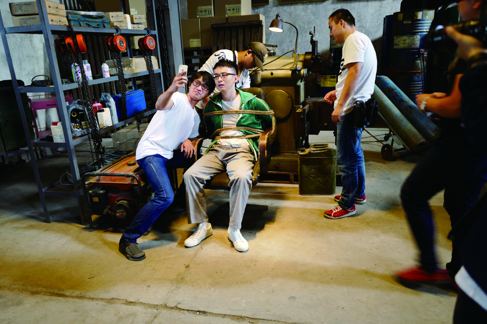

2016年，上海，初秋，穿过城市的风带着南方特有的湿气。藏在每天涌入这座巨型城市的喧闹人潮当中，《乘风破浪》悄无声息地开拍了。没有开机仪式，连最为传统的两个基础步骤——烧香，以及揭开事先盖在摄影机上的红布——也被省略了。你甚至无法在现场的三百多张工作证上找到这部电影的名字，取而代之的是不用说也知道出自谁手的七个金色大字，“金秋十月农忙欢”。
开机当天凌晨4点，制片主任徐征带着全体主创去寺庙做了一场早课。果然，导演韩寒再次错过了这场以“求个平安”为目的的祈福——他最重要的第二项人生追求是“可以自由决定睡眠时间”。通常情况下，这会由对醒来之后所要做的事情的热爱程度来决定，比如拍摄正式开始没几天，他一下子就变成了全组睡得最晚、起得最早的人。
而第一项人生追求“不主动社交”则被他贯彻得更加彻底——开机仪式就被他视为不必要的社交活动之一。不过，如果有人据此推断导演是个难以相处的人，那么用不了多久，他就会发现自己完全搞错了。
导演不是没有听过诸多电影前辈关于“刚开始拍一定要用高压政策把所有人震住”的劝诫，但显然从来没打算这么做。他看起来总是很轻松，“特别爱玩”，“特别能跑”。
最开始，很多身经百战的剧组人像看西洋镜一样看着这个从不发火的导演，“从来没见过”，他们说，有人甚至试图用地域来解释这个问题，“是不是因为他是上海人啊？”又过了一段时间，他们惊讶地发现几个制片人说话的口气和神态都开始跟导演越来越像了。
“所以这个制作团队，”他的好朋友、这部电影的录音指导郭明在很久之后总结道，“看上去韩寒是一个名字，但实际上韩寒代表所有人。”

理发店隔壁是寿衣店的小镇
如果用赖皮一点的方法计算，《乘风破浪》故事的源头可以追溯到很多年以前，久到拍电影还只是韩寒脑子里一个虚无缥缈的幻想，创办电影公司当老板更是完全没影的事儿。那时候韩寒尚且有大把空闲，认识了几个同样“闲功夫比较多”的朋友——都是才毕业没几年，学电影的年轻人——于是常常厮混在一起，吃饭、踢球、打游戏，而只要大家在上海，他总会强烈要求进行一项保留节目，那就是开车带他的朋友们瞎逛。
目的地永远是上海周边各种各样的小镇，韩寒兴致勃勃带大家去看老家亭林镇的老雕塑园，雕塑早荒废了，园子里全是疯长的野草；还有他小时候的房子旁边的一个烂尾楼，楼的底部蓄满了雨水，人都可以在里面游泳；早在佘山天坑还没被酒店项目看上以前，他就开车带大家去看过那个大坑……还有各种奇怪的路，奇怪的桥，奇怪的水塘，反正他总能找到一些莫名其妙却怪有趣的地方。起初大家惊讶于他对这些小镇的热情和熟悉程度，接着很快觉得路也有意思，桥也有意思，水塘也有意思。江南小村就像这群年轻人的游乐场，让他们可以自由而漫无目的地行驶在连接一个镇子与另一个镇子的乡村公路上，在车里聊天，聊天，聊天。
回想起来，那可真是段奢侈的好日子。2014年，开始拍第一部电影《后会无期》之后，韩寒的生活节奏迅速从“悠闲”模式调到了“忙碌”模式，当年瞎逛小团伙的成员之一于梦眼看着他从一个“特别爱闲逛的人”变成了一个“没有时间闲逛的人”。几个人再次聚在一起，已经分别成了《后会无期》的制片和摄影。宣传期接近尾声，于梦开始越来多地听韩寒讲起一些零星的新故事片段，几乎无一例外都发生在小镇上。片段渐渐连成一个故事的雏形：几个年轻人在小镇上闲荡，无所事事，“又像收保护费，又像物业的这么几个人”。再下面就到了韩寒在北京国贸大酒店给几个朋友念他的新剧本，抱个电脑，念到开心的地方就把电脑放下站起来开始演。到后来他一站起来所有人就跟着哈哈哈笑，总共念了两个多小时。时间已经很晚，酒店窗外是北京最繁华的马路，灯火闪耀，川流不息
。
后来韩寒邀请邓超出演的时候也表演了剧本，也是两个多小时，在邓超北京的办公室，中途没有喝水，还经常停下来拿出手机播放他想象中某个场景的背景音乐。
韩寒很快做了两个决定。第一，要在已经对外公布的《天空制造》和《三重门》之间“插个票”。第二，要快速地拍完《乘风破浪》。
从2015年开始，他沉浸在仿佛没有尽头的公司事务中。“有的时候擅长和不喜欢可以并行，”他说，“就是你擅长做自己不喜欢的事情，虽然比较悲催。”真正能令人兴奋的是创作，那段时间，他急于从无到有去创造什么全新的东西。
去年，摄影指导程马志远还在北京《绝世高手》片场，美术指导王阔刚刚设计制作做完《长城》里的各种机械齿轮，动作指导陈家福正排着电影《中国推销员》的动作戏，副导演张洪伟才从《京城八十一号》剧组下来不到一个月。几乎是同一时间，他们分别接到电话，问，韩寒有一部新戏马上要开拍了，感不感兴趣？
他们跟韩寒一样很快做了决定。程马对于如何用摄影机营造出上世纪90年代的江南小镇氛围充满兴致。看完剧本，他立刻写了一封邮件给小白——《乘风破浪》的剪辑指导，也是当年瞎逛小团伙的另一个核心成员——在信里简单描述了自己的想法。“在我看来现实是充满着遗憾的，电影中它所呈现的现实，我觉得，应该是现实它在理想时候的样子——不打折扣的。”
电影里的“亭林镇”主要由现实中的三个小镇构成：浙江嘉兴的丁栅，江苏常熟的吴市，以及韩寒出生和长大那个真正的亭林镇。丁栅曾经有过颇值得骄傲的繁荣，不过随着年轻人离去，发展也停止了，那里还保存着那种江南明信片里常见的灰瓦灰墙的低矮楼房，精巧漂亮的天井和小桥，窄巷子，旧路灯，一片一片的果园。
当邓超的双脚真正走在电影取景的小镇上，跟他所饰演的赛车手徐太浪一样，他觉得自己好像是穿越了。怎么说呢，那种感觉跟看剧本的时候似乎有相通之处，又好像截然不同。江南的小镇老是有雨。邓超想起，小时候被妈妈罩在雨衣下面闻到的也是这个味道，那时他的视线里只能看到一小块和这里样子差不多的石板路，只看路面材质的变化，就能知道自行车走到了哪儿。邓超奶奶家所在的江西南丰县盛产一种金色的小蜜橘，有一场戏，阿浪跑遍整个小镇急切地想见到自己的妈妈，拍的时候他跑过几棵橘子树，“到那儿我就一下惊着了”，就像3D效果一样，“就从你脚底渲染——哗——一下子又回荡——”，他甚至有一种感觉，好像一回头就能看到奶奶站在身后。“像是一个装置的呼唤，就是你走在那个装置里面，你总得用那个装置，用你身体的那个装置。”这一切都让他对这部电影投入更多感情。